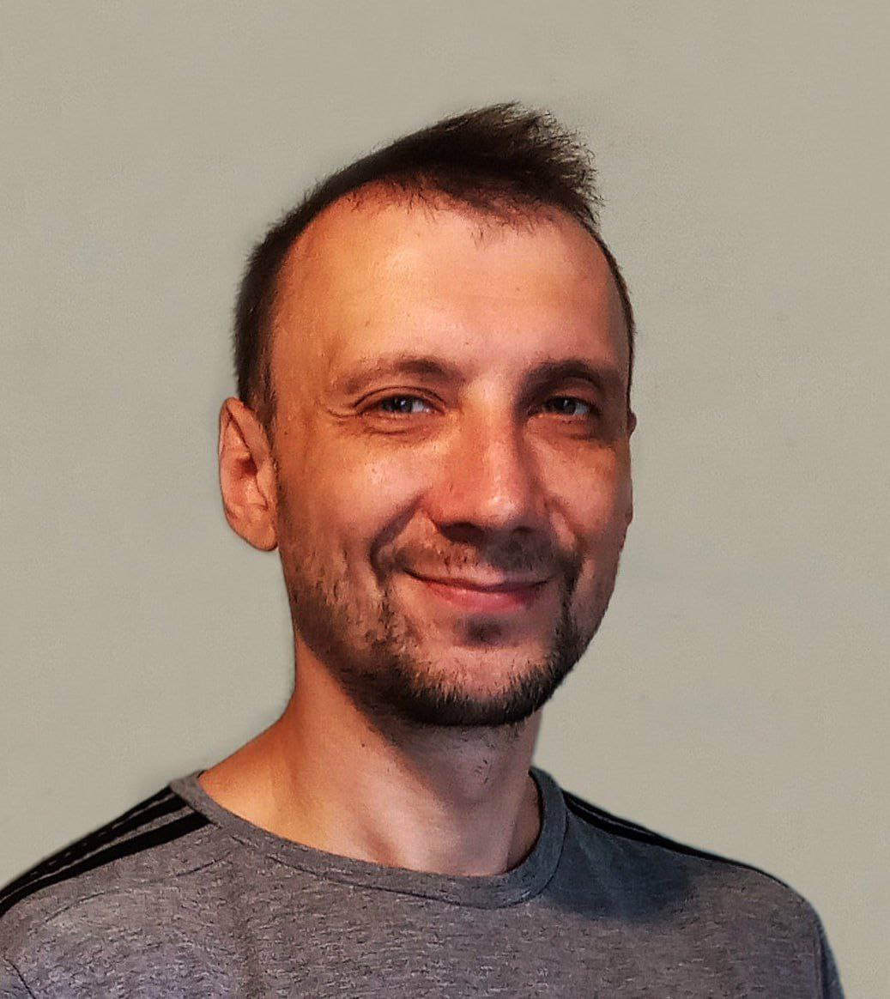

Velkommen
Hei. Dette er porteføljen min. Du kan bla i fred. Jeg lover å ikke selge deg noe. 😊
Om meg
Jeg heter Alex Maistrov. Jeg er en fullstack-utvikler som bygger prosjekter med Python og JavaScript — ofte med AI i motorrommet, ikke som pynt i markedsføringen. Jeg liker systemer som faktisk fungerer: tydelige modeller, målbare resultater og færre magiske forklaringer.
Retningen min er prosjekter for utdanning og utvikling av kritisk tenkning, bygget på rasjonalisme og LessWrong-inspirerte prinsipper: bedre spørsmål, bedre beslutninger, mindre selvbedrag. Jeg elsker utfordringer der jeg kan bringe struktur og optimalisering, og nyskape noe ved å kombinere rasjonalitet og kreativitet.
